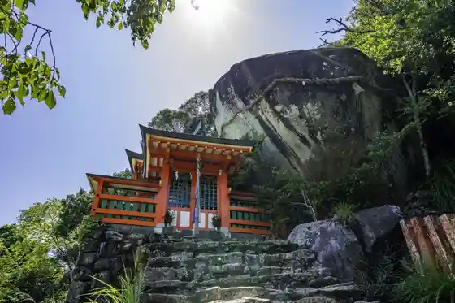
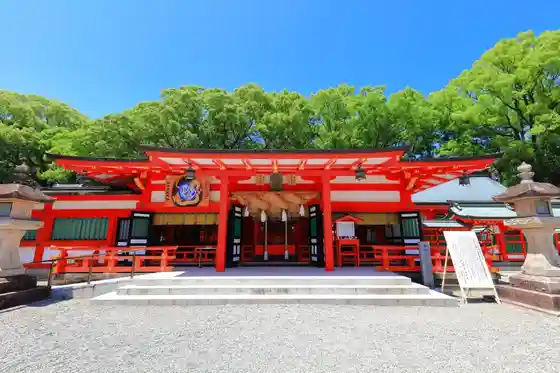
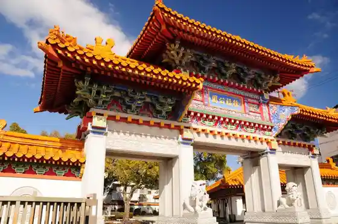
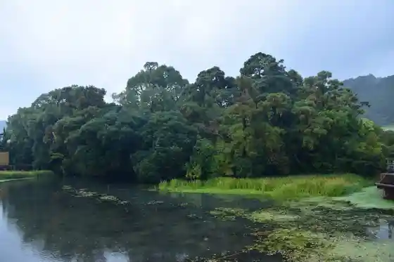

Kami Kura Shrine
Shingu, Wakayama · 0735-22-2533 · Official / source link

Kumano Hayatama Taisha
Shingu, Wakayama · 0735-22-2533 · Official / source link

Jofuku Park
Shingu, Wakayama · 0735-21-7672 · Official / source link

Fu Shima Forest
Shingu, Wakayama · 0735-21-0474 · Official / source link

Kuwa no Ki Falls
Shingu, Wakayama · 0735-23-3333 · Official / source link
Ana Shima (Ana Shima Itsukushima Shrine no Sekizo Mono)
Shingu, Wakayama · Official / source link
A Suga Shrine
Shingu, Wakayama · 0735-22-3986 · Official / source link
Shingu (Tan Tsuru) Castle Ruins
Shingu, Wakayama · 0735-23-3368 · Official / source link
Kuroshio Park
Shingu, Wakayama · 0735-23-3357 · Official / source link
Hana Shiro Falls
Shingu, Wakayama · 0735-23-3333 · Official / source link
Kyunishi Village Ie House (Nishi Village Isaku Memorial Museum)
Shingu, Wakayama · 0735-22-6570 · Official / source link
Sato Haruo Memorial Museum
Shingu, Wakayama · 0735-21-1755 · Official / source link
Kyu Chappuman Tei
Shingu, Wakayama · 0735-23-2311 · Official / source link
Kumano Kodo Takano Saka
Shingu, Wakayama · 0735-22-2840 · Official / source link
Kumano Kodo Nakahechi Daiun Torikoshi Enza Ishi
Shingu, Wakayama · 0735-22-2840 · Official / source link
Suzushima
Shingu, Wakayama · 0735-23-3333 · Official / source link